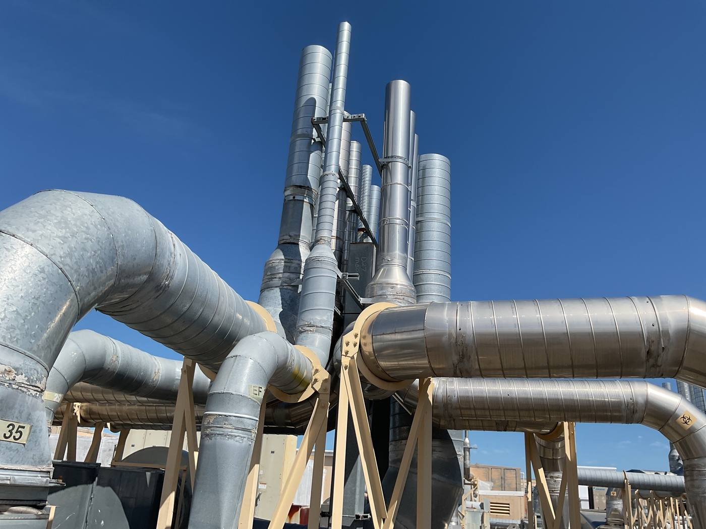
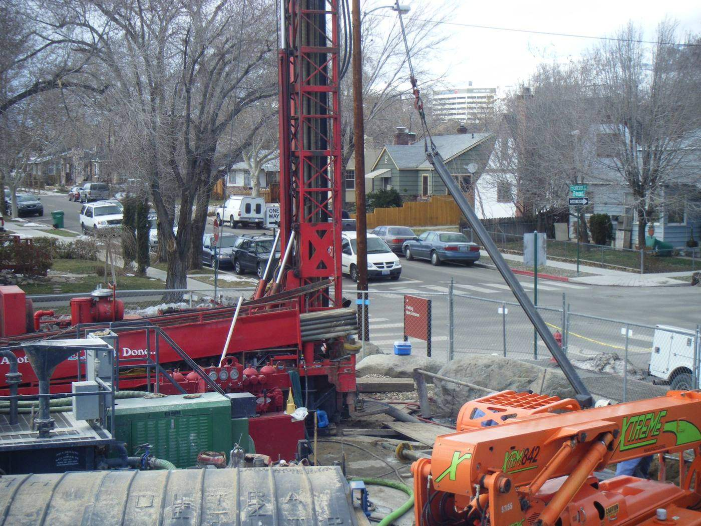

What net zero actually means
Net zero is a balance between two numbers over the course of a year. The first is the energy a campus consumes. The second is the energy that campus produces on its own property. When those two cancel out, the campus is at net zero.
Notice what that does not say. It does not say the hospital uses less energy. A medical center runs its chillers, boilers and air handlers around the clock no matter what, and nobody is proposing it stop. What changes is where the energy comes from. At net zero the campus is still consuming plenty, it is simply generating as much as it consumes, so the amount it has to buy from the utility drops to nearly nothing.
That is also where the money is. You are not spending less energy. You are spending less on energy, because you stopped paying someone else to deliver it.
There are only two levers, and every project below pulls one of them. Lower what the campus consumes, through efficiency. Raise what the campus produces, through on site generation. Both move toward the same meeting point, and efficiency usually goes first because every unit of waste you eliminate is a unit of solar you never have to build.
Houston: making your own electricity
The most direct way to produce energy on site is to catch it falling on the property. At the Houston VA Medical Center, Alares provided construction management and commissioning for a 5.0 MW solar photovoltaic system, a roughly $21M build carried from groundbreaking through closeout with daily on site management.
Sunlight hits the panels, the panels make electricity, and that power feeds the hospital directly. Every kilowatt hour the array produces is a kilowatt hour the VA does not buy from the grid. What makes it attractive on a campus like this one is that it uses land already on the books. The parking lots were already there. Building over them turns real estate the VA was already paying for into a power source, and shades the cars underneath while doing it.
Newington: one fuel doing two jobs
The second project is the clever one. A conventional power plant burns fuel to make electricity and throws the leftover heat away out a stack. A combined heat and power plant captures that heat and puts it to work.
At the Newington VA Medical Center, Alares served as construction manager and commissioning agent for a new CHP plant of roughly $18M, with three generators, an absorption chiller and a cooling tower packed into about 10,300 square feet. The generators make electricity for the campus. The heat they give off drives an absorption chiller, which produces chilled water for campus cooling. Same fuel burn, two useful outputs, and far less waste than running a generator and a separate chiller.
This is also where commissioning earned its keep. During functional testing our team found the hot water loop feeding the building heat exchanger was cooling the very hot water meant to drive the absorption chillers. The plant was working against itself. We traced it, recommended a corrected control sequence, and the controls were reprogrammed before the VA ever took the plant over. A plant that fights itself does not deliver the efficiency it was designed for, which is exactly why the design intent has to be verified under load.
Reno: heat that is already in the ground
A few thousand feet down, the ground is naturally hot. Direct use geothermal means reaching that heat and using it to warm buildings, with no fuel burned at all. The heat is already there. The engineering question is whether you can actually get to it, and whether there is enough of it to matter.
Earlier studies suggested the Moana Hot Springs resource might extend under the Reno VA Medical Center, but nobody had proof. Alares designed and installed a test well to a depth of 2,200 feet, ran static and dynamic thermal production testing to measure production rate and thermal gradients, and cleared a full environmental assessment under NEPA to a Finding of No Significant Impact, coordinating permits with the Bureau of Land Management, two Nevada divisions and the City of Reno.
The testing confirmed direct use geothermal heating is viable for the campus. That is the point of feasibility work. Before an owner commits capital to a major sustainability investment, somebody has to put a well in the ground and find out whether the assumption holds.
And first, stop wasting what you already buy
Before you generate a clean kilowatt, stop wasting the ones you are already paying for. Efficiency is the cheapest reduction available because it usually requires no new equipment, just systems tuned to run the way they were designed to. Across 11 VA hospital campuses in New England, more than 10.5 million square feet, retrocommissioning identified energy savings of 15 to 20 percent without a capital project.
It is a design choice too. The 100 percent outside air heat pump system we designed for the Bedford VA research building cut that building's energy costs by roughly 35 percent, which is 35 percent less generation you have to build to offset it.
The honest version
You do not reach net zero on a federal campus by writing one big check. You reach it by tuning what you have, generating where the site allows, and proving the expensive bets before funding them. Solar at Houston, combined heat and power at Newington, geothermal feasibility at Reno, efficiency everywhere. Each one stands on its own business case. Together they close the gap between what a campus uses and what it makes.
None of it is free. A solar array and a CHP plant cost real capital up front, and the return is measured in years rather than months. Net zero is not free energy, it is prepaid energy. You spend once to build it and then stop paying monthly.


